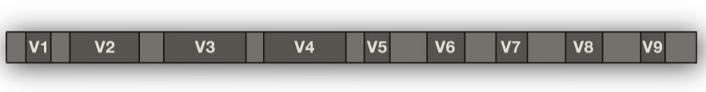

What is 16S rRNA Sequencing?
While we have established that there are a multitude of different types of questions we can ask about our microbial city, we are going to pivot and focus in on only one of those in this particular page: targeted amplicon sequencing, or the census.
This is targeted DNA sequencing data that is focused on the 16S, ITS, or 18S genes. These are genes that are highly conserved in members of the microbiome. In this case, we will focus in on the most common, 16S rRNA sequencing.

16S rRNA amplicon sequencing works by selectively amplifying a conserved portion or portions of the 16S rRNA gene, a gene present in virtually all bacteria and archaea. The gene has conserved regions that can be targeted by primers that surround hypervariable regions where the sequence differs enough to distinguish taxa.
The 16S rRNA gene structure
The 16S rRNA gene is approximately 1,500 bp long and contains alternating conserved regions and nine hypervariable regions (V1–V9) whose sequence diversity distinguishes taxa, functioning like genetic barcodes. No single variable region resolves all taxa equally well, and short-read sequencing (150–300 bp per read) means you are targeting one or two regions at a time.
Your choice of target region is a consequential decision in your study design.
Variable region selection
| Region | Forward / Reverse Primers | Amplicon Size | Sequencing Mode | Notes |
|---|---|---|---|---|
| V4 | 515F GTGYCAGCMGCCGCGGTAA / 806R GGACTACHVGGGTWTCTAAT |
~250 bp | 2×150 or 2×250 bp | Earth Microbiome Project standard; short, fits Illumina read lengths well; broad coverage |
| V3–V4 | 341F CCTACGGGNGGCWGCAG / 805R GACTACHVGGGTATCTAATCC |
~460 bp | 2×250 or 2×300 bp | Most common in clinical microbiome studies; better taxonomic resolution; requires good paired-end overlap |
| V4–V5 | 515F GTGYCAGCMGCCGCGGTAA / 926R CCGYCAATTYMTTTRAGTTT |
~380–415 bp | 2×250 bp | Better archaeal coverage |
| V1–V2 | 27F AGAGTTTGATCMTGGCTCAG / 338R TGCTGCCTCCCGTAGGAGT |
~310 bp | 2×250 bp | Better gram-positive resolution; less reference data; less common in human microbiome studies |
Community composition estimates are not directly comparable across studies that used different primer pairs. Even within the same region, primer mismatches can create systematic biases toward certain taxa. If you are comparing to published data or a reference cohort, you are best off using the same primer pair.
Amplicons
The product of PCR amplification using these primers is called an amplicon — the short DNA fragment spanning the targeted variable region. Because the same primers are used for every sample, every amplicon produced from a given study targets the same stretch of the 16S gene.
After sequencing, each amplicon sequence is compared to a reference database to assign a taxonomic identity. Sequences that are identical (or nearly identical, depending on the pipeline) are grouped into Amplicon Sequence Variants (ASVs) which serve as the working units of diversity in downstream analysis.